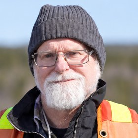
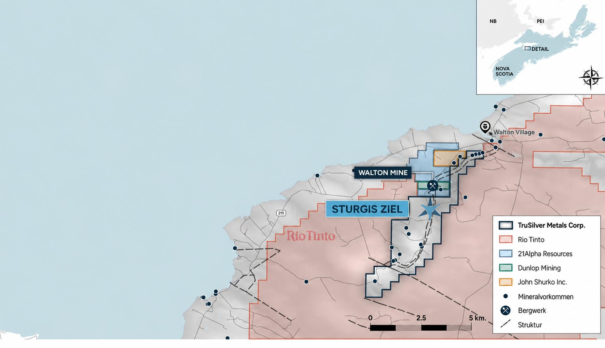
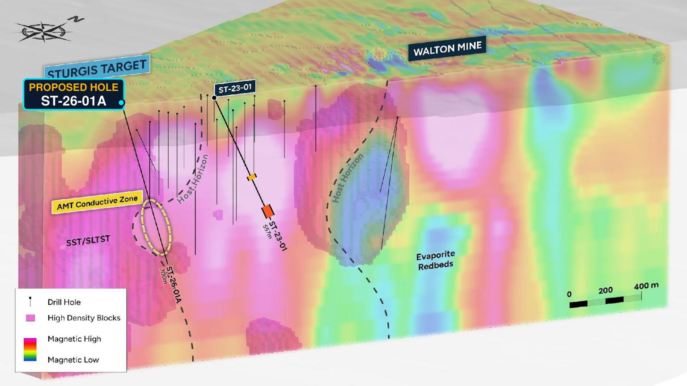
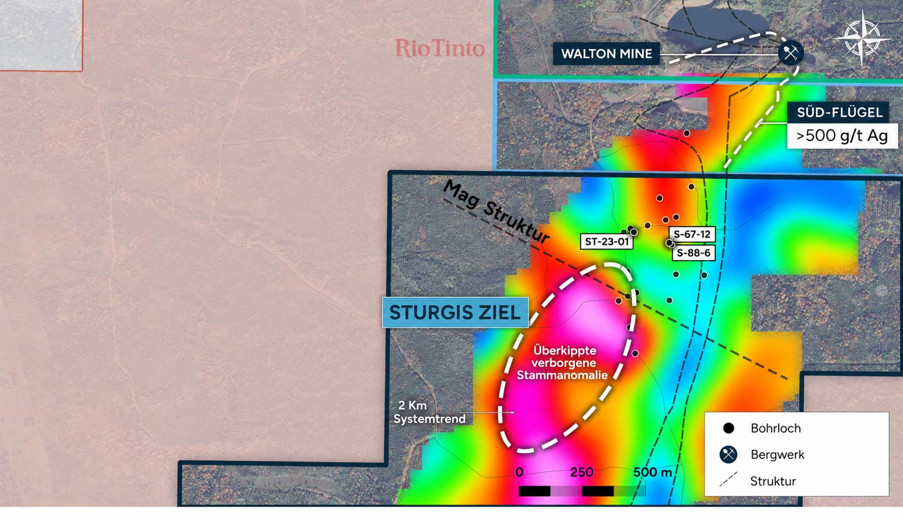

Wer hier spricht
Ein Explorationsunternehmen, das gerade an die Börse geht - geführt von Leuten, die diesen Weg bereits einmal gegangen sind.

Seit dem 27. Oktober 2026 ist die TruSilver Metals Corp. an der kanadischen TSX Venture Exchange unter dem Kürzel TAG notiert.2 Eine Notierung in Frankfurt ist in Vorbereitung. Kürzel, WKN und ISIN sowie die deutschen Handelsplätze veröffentlichen wir an dieser Stelle, sobald sie feststehen.6 Die TSX Venture bleibt die Primärnotierung.
Dieser Weg ist für unser Team nicht neu. Penny White und William White waren Mitbegründer der Tiger Gold Corp. Rick Huang war dort CFO, als Tiger Gold auf demselben Weg an die TSX Venture gebracht wurde und dabei mehr als 40 Millionen kanadische Dollar einnahm.5
Peter Hancock ist Lead Director des Verwaltungsrats von TruSilver.13 Er verfügt über mehr als 30 Jahre Erfahrung im Bergbau, den größten Teil davon bei Glencore. Als Präsident von Koniambo Nickel war er von 2011 bis 2016 für die Fertigstellung, Inbetriebnahme und den Hochlauf der 7 Milliarden US-Dollar teuren Koniambo-Mine in Neukaledonien verantwortlich. Heute gehört er dem Verwaltungsrat von Sibanye Stillwater an.5
Unser Geologe ist Jim Michaelis, P.Geo. Er hat dieses Gebiet erstmals vor 45 Jahren kartiert.5 Qualified Person gemäß NI 43-101 für die technischen Angaben auf dieser Seite ist unser Projektgeologe Jeff Burke, P.Geo. Er ist Mitarbeiter des Unternehmens und nicht unabhängig vom Unternehmen.13
Seit September 2026 ist Matt Rees, M.Sc., P.Geo., Mitglied des Verwaltungsrats von TruSilver und leitet unser Bohrprogramm. Er war mehr als elf Jahre bei IAMGOLD, zuletzt fünf Jahre als Chief Geologist, in einem Team, das rund 29 Millionen Unzen Gold entdeckte oder erwarb. Jim Michaelis bleibt dem Unternehmen als Strategic Technical Advisor erhalten.11
Kapitalstruktur
Wer die Aktien hält, und was davon gesperrt ist.
| Position | Aktien |
|---|---|
| Escrow und freiwillige Dreijahressperre | 25.214.848 |
| Sonstige Handelsbeschränkungen | 5.106.840 |
| Streubesitz | 12.222.990 |
| Ausstehende Aktien zum Listing | 42.544.678 |
| Optionen | 3.100.000 |
| Warrants | 12.544.370 |
| Voll verwässert | 58.189.048 |
Kapitalstruktur des Emittenten nach Abschluss der Qualifying Transaction. Marktkapitalisierung zum Emissionspreis von 0,25 CAD: rund 10,6 Millionen kanadische Dollar (CAD), zum Wechselkurs vom 15. September 2026 etwa 6,6 Millionen Euro. Kasse zum Listing: rund 2,5 Millionen CAD. Insiderbeteiligung: 39 %. Die Finanzierung zu 0,25 CAD je Unit ist abgeschlossen.12
Rund 305.000 CAD der Finanzierung kamen von unseren eigenen Direktoren und unserem CFO.11
Jede Aktie, die unser Team vor dieser Finanzierung hielt, ist gesperrt oder beschränkt.5
In den Jahren vor dieser Finanzierung hat niemand ein Gehalt bezogen. Jeder Dollar ging in die Exploration.
Was vorliegt
Das Projekt in einer Tabelle.
| Projekt | Sturgis-Walton Silver Project, Hants County, Nova Scotia, rund 70 km nordwestlich von Halifax.2 |
| Eigentum | 100 %, 70 Claims, drei Explorationslizenzen, rund 1.120 Hektar, kein NSR.2 |
| Genehmigung | Crown-Land-Explorationsgenehmigung bis 4. März 2028, Bohrungen an drei Standorten.4 |
| Bohrung 2023 | ST-23-001, 557 m tief. Zwei mineralisierte Abschnitte: 12,15 g/t Silber über 10,5 m (359 bis 377 m), darin 0,6 m mit 149 g/t, und 48,8 g/t Silber über 19 m (502 bis 552 m). Kupfer: 0,044 % über 18 m in der oberen Zone, 0,091 % über 50 m in der unteren, darin 8 m mit 0,35 %.3 |
| Wirtsgestein | Macumber-Formation, dieselbe Einheit, aus der die Walton-Mine förderte.3 |
| Historische Nachbarmine | Walton-Mine, 1941 bis 1978, Fördergehalte 350 bis 933 g/t Silber. Nicht in unserem Besitz. Historisch, nicht durch eine qualifizierte Person geprüft.1 |
| Technische Vorarbeiten | Magnetik per Drohne 2021, Gravimetrie und AMT 2024, 3D-Strukturmodell. Mehr als 900.000 CAD.5 |
| Nachbarschaft | Rio Tinto beantragte Ende 2025 rund 5.000 Claims in Hants County. Unsere waren nicht mehr frei.7 |

Zur Mine nebenan. Die Walton Mine nahm 1941 als Barit-Tagebau ihren Betrieb auf. Im Jahr 1955 stieß eine Bohrung unterhalb der Mine auf massive Sulfide, die Blei, Zink, Kupfer und Silber enthielten. Die Erzproduktion begann 1961, wobei das der Aufbereitungsanlage zugeführte Erz Silbergehalte zwischen 350 und 933 Gramm pro Tonne aufwies.1
Einzelne Bohrungen lagen weit darüber. DDH 174 traf 5.754 g/t Silber und 0,6 % Kupfer über 12,8 m. DDH 210 traf 1.233 g/t über 24,1 m.8
Das sind historische Werte, und wir behandeln sie auch entsprechend. Sie stammen aus einer Zeit vor den heutigen Berichtsstandards, wurden von keiner Qualified Person verifiziert und der Bohrkern von DDH 174 ist nicht mehr vorhanden, sodass die Ergebnisse nicht erneut überprüft werden können.8 Sie zeigen, was die Mine damals vorgefunden hat – nicht, was unser eigenes Gebiet enthält.
Im Jahr 1970 begann der Untergrund nachzugeben. Es war zu viel Barit abgebaut worden und zu wenig davon zurückgeblieben, um den Untergrund zu stabilisieren. Salzwasser drang ein. Die Mine produzierte weiter, während sie sich langsam mit Wasser füllte, und wurde 1978 geschlossen.1 Sie wurde geschlossen, weil der Untergrund nachgab – nicht, weil das Silber ausgegangen war.
Der Tagebau und die alten Grubenbaue befinden sich auf Lizenzen anderer Unternehmen, nördlich und westlich von uns.4 Was uns gehört, ist das Gebiet, in dem sich dieselbe Wirtsformation fortsetzt.

Was schiefgehen kann
Fünf Punkte, die Sie kennen sollten, bevor Sie weiterlesen.
- Es gibt keine Ressource. Wir sind ein Explorationsunternehmen mit einem Modell, einer Bohrung und einer Genehmigung. Die nächsten Bohrungen können nichts finden.
- Die Zahlen der Walton Mine sind nicht verifiziert und sagen nichts darüber aus, was sich auf unserem eigenen Gebiet befindet. Übertragen Sie die Erzgehalte der alten Mine nicht einfach auf unser Explorationsziel.
- Das Gestein ist gefaltet und überkippt. Unsere Bohrung von 2023 traf auf eine umgekehrte Schichtenfolge.5 Eine Bohrung, die nur um wenige Grad am richtigen Winkel vorbeizielt, kann das eigentliche Ziel verfehlen und keinerlei Mineralisierung finden. Deshalb investieren wir zunächst in geophysikalische Untersuchungen, bevor wir Geld für weitere Bohrmeter ausgeben.
- Weitere Explorationsprogramme benötigen weiteres Kapital. Jede Finanzierung verwässert die bestehenden Aktionäre.
- Der Silberpreis liegt außerhalb unserer Kontrolle. Jede Berechnung, die vom heutigen Silberpreis ausgeht, ist eine Annahme und kein Versprechen.
Das Programm
Was in welcher Reihenfolge passiert.
Phase 1: erweiterte AMT-Geophysik und mindestens zwei Folgebohrungen.2 Das tief liegende Explorationsziel liegt 1,4 Kilometer süd-südwestlich der Mine. Unsere Bohrung von 2023 traf die Wirtsformation südlich der alten Grubenbaue, auf Grund, den TruSilver hält, auf dem Weg dorthin.4, 5
Nach jeder Bohrung werden Bohrloch-Geophysik, elektromagnetische Messungen und Messungen der induzierten Polarisation (IP) durchgeführt. Damit lässt sich das Gestein bis zu etwa 150 Meter rund um das Bohrloch untersuchen – Bereiche, die der Bohrkern selbst niemals sichtbar machen könnte.5 Jede Messung fließt zurück in das 3D-Modell, und das Modell wird vor der nächsten Bohrung weiter präzisiert.
Phase 2: ein größeres Bohrprogramm mit etwa 3.500 Metern.2
Die Genehmigung läuft bis 4. März 2028 und umfasst drei Bohrstandorte, Zufahrtswege und 4,3 Kilometer Linienschnitt.4
Wir nennen noch keinen Termin für die erste Bohrung. Wir legen lediglich die Reihenfolge der geplanten Schritte fest. Wenn Sie auf unserer Mailingliste stehen, werden Sie per E-Mail über jeden einzelnen Schritt informiert, sobald er durchgeführt wird.
Die Interpretation
Warum wir glauben, dass die Mine nur einen Ausläufer bearbeitet hat.
Die Metallmineralisierung bei Walton entstand nicht dort, wo sie später abgebaut wurde. Metallhaltige Sole steigt aus dem tiefen Becken entlang von Störungen nach oben, trifft auf eine Kalksteinschicht, die sie chemisch ersetzen kann, und lagert ihre Metallfracht dort ab, wo sich die geologischen Bedingungen verändern.9 Diese Art von Lagerstätte wird als „Irish-Type“ bezeichnet – benannt nach dem Lagerstättengürtel in Irland, in dem solche Vorkommen auftreten. Bevor sich der Atlantik öffnete, waren dieses Gestein und jenes Gestein miteinander verbunden bzw. ursprünglich dasselbe Gestein.5, 9
Eine Mine baut das ab, was an der Oberfläche erreichbar ist. Sie kann sich nicht aussuchen, wo die Mineralisierung liegt.
Unsere Interpretation ist, dass die Walton-Mine einen hoch gelegenen Ausläufer des Systems abgebaut hat, der zufällig bis an die Oberfläche reichte.5
Die Untersuchungen aus den Jahren 2021 und 2024 haben in der Tiefe eine große, dichte Anomalie entdeckt, die sich 1,4 Kilometer süd-südwestlich der Mine befindet.5 Drei verschiedene Methoden – Magnetik, Gravimetrie und AMT – weisen dabei auf denselben Bereich im Untergrund hin.5

Die Bohrung von 2023 erklärte, warum die Geometrie so ungewöhnlich ist. Das geologische Modell hatte vorhergesagt, dass das gesamte Gesteinspaket gefaltet und überkippt ist. Die Bohrung durchteufte genau diese Struktur: Die Schichtenfolge wurde in umgekehrter Reihenfolge angetroffen, die Bohrung durchquerte die Macumber-Formation zweimal, und zwischen diesen beiden Durchteufungen befindet sich die Falte selbst im Kern.5
Die Mine reichte bis in eine Tiefe von 500 Metern. Unsere genehmigten Bohrungen sind bis zu einer Tiefe von etwa 650 Metern geplant.4 Das eigentliche Tiefenziel wurde bislang noch von keiner Bohrung erreicht.4
Die Lage stimmt. Das Wirtsgestein stimmt. Unsere eigene Bohrung hat auf dem Weg dorthin dieselbe Art von Mineralisierung angetroffen. Ob der tieferliegende Körper Silber enthält, wissen wir nicht. Das kann letztlich nur die Bohrung zeigen.

Warum Silber, kurz
Zwei Zahlen, die den Rest erklären.
Nur etwa 26 % der weltweiten Silberminenproduktion stammen aus Minen, die speziell für die Gewinnung von Silber errichtet wurden. Der Rest fällt als Nebenprodukt der Kupfer-, Blei- und Zinkförderung an.10
Die Nachfrage hat das Angebot fünf Jahre in Folge übertroffen, 2021 bis 2025, und für 2026 wird ein sechstes Defizit erwartet.10
Wenn der Markt Angebot braucht, das auf den Silberpreis reagiert, braucht er Minen, die gezielt für Silber gebaut werden. Deshalb bohren wir gezielt auf Silber.
Kurz gefasst
Drei Punkte, alle nachprüfbar.
- Neben unserem Grundstück förderte bis 1978 eine Mine Silber mit 350 bis 933 g/t, und sie schloss, weil der Untergrund nachgab.1
- Wir besitzen 100 % des Grundstücks, auf dem die Wirtsformation der Walton-Mine weiterläuft, ohne NSR, und unsere Bohrung von 2023 fand dort Silber und Kupfer.2, 3
- Jede Aktie, die unser Team vor dieser Finanzierung hielt, ist gesperrt oder beschränkt, und die Genehmigung für die nächsten Bohrungen liegt vor.4, 5
Die Bohrung, die die offene Frage beantwortet, ist noch nicht gebohrt. Sie stehen am Anfang dieser Geschichte. Was Sie mit diesem Zeitpunkt anfangen, ist Ihre Entscheidung.